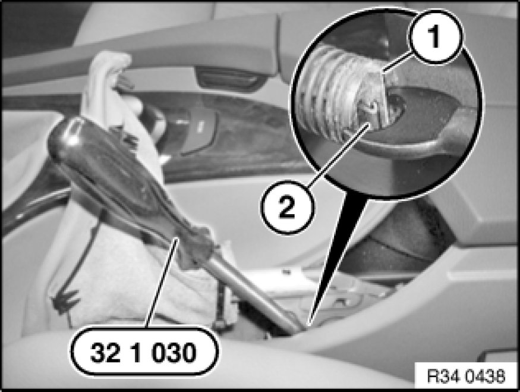

Parking Brake System: Adjustments
34 10 014 - Adjusting handbrake

Special tools required:
- 32 1 030 32 1 030 Lever
Perform inspection in the following manner:
When 1st ratchet is engaged, no braking force should be exerted.
The difference in wheel circumferential forces between the left and right wheels may deviate by max. 30% from the greater value (measured on brake analyzer).
In event of larger deviations of wheel circumferential force: carry out readjustment.
Braking with locked wheels must be possible with the parking brake.
The parking brake must be reset if the actuation stroke is greater than 10 teeth.
Note:
Accurate adjustment of the parking brake is only possible if the parking brake Bowden cables and all moving parts on the parking brake move easily and function correctly.
Basic setting of the parking brake is required whenever:
- - When replacing parking brake shoes.
- - When replacing brake discs.
- - In event of excessive actuation stroke (10 teeth).
- - When replacing parking brake Bowden cables

1. - Setting instruction for brake shoes (basic setting)
Lock adjuster unit (ASZE).
Actuate parking brake lever. Screw in special tool 32 1 030 32 1 030 Lever partially. Press stop (1) of adjusting spring back to such an extent that retaining hook (2) engages in stop (1).
Completely unscrew one wheel stud on each rear wheel.
Installation Note:
Tightening torque 36 10 1AZ Wheels.
Turn wheel until adjustment screw is visible in tapped hole.
Turn adjusting screw with a screwdriver until the wheel is no longer able to turn.
Then unfasten the adjusting screw 6 notches.
Unlock adjuster unit (ASZE).
Lever restraint hook (2) outwards with a suitable screwdriver (1).
Restraint hook (2) must disengage from stop of adjusting spring.

Important!
Follow instructions for Brake testing Checking Brakes on Test Stand on test stand.
2. - Setting instruction for parking brake Bowden cables
The parking brake lever must be applied 5 times to approx. 400 N actuating force.
2.1 - On brake analyzer
0th tooth (parking brake released): -
Vehicles with manual transmission: Shift lever in neutral position.
Vehicles with automatic transmission: Selector lever position "N".
- Without locking differential ≤150 N.
- With locking differential ≤ 200 N (possibly odd display).
1st tooth: - No increase in braking force with regard to 0th tooth. Indicator lamp can be lit.
2nd tooth: - An increase in braking force must take place. Indicator lamp must be lit.
3rd tooth: - Increase in braking force.
5th tooth: - The brake force display must have reached ≥ 500 N.
3. - Braking in the duo-servo parking brake
The following braking-in procedures are applicable in case of insufficient braking effect or after replacing brake discs and/or brake shoes.
3.1 - On brake analyzer
Apply parking brake lever until wheel circumferential force at first wheel is 800 N.
Lock parking brake lever in next lower tooth.
Release parking brake lever after approx. 2 minutes.
3.2 - When driving on road
(If possible inside the company grounds or on an unused road)
At approx. 40 km/h apply parking brake lever until a braking effect can be felt.
Pull parking brake lever to next notch and drive on for approx. 400 m.
A basic requirement is that parking brake is adjusted uniformly.
Note:
If necessary, repeat braking-in procedure. Allow brake to cool down sufficiently.